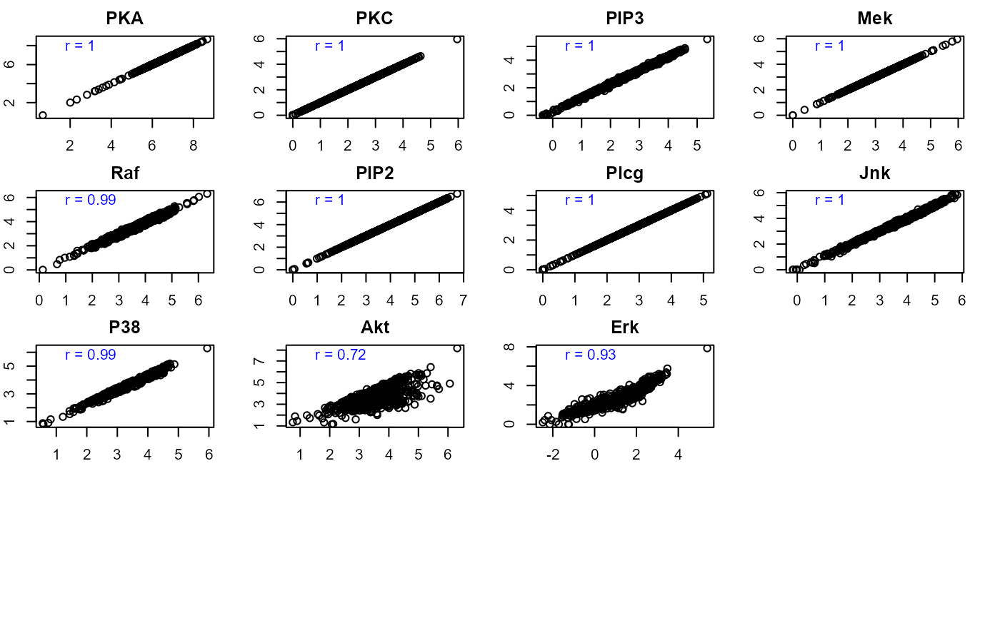

Display a pairwise scatter plot of two datasets for a random selection of variables. If the second dataset is not given, the function displays a histogram with normal curve superposition.
pairwiseMatrix(x, y = NULL, size = nrow(x), r = 4, c = 4, ...)
| x | A matrix or data.frame (n x p) of continuous data. |
|---|---|
| y | A matrix or data.frame (n x q) of continuous data. |
| size | number of rows to be sampled (default |
| r | number of rows of the plot layout (default |
| c | number of columns of the plot layout (default |
| ... | Currently ignored. |
No return value
Mario Grassi mario.grassi@unipv.it
#> #>#> DAG conversion: TRUE #> #> Degrees of freedom: #> Input graph = 36 #> Output graph = 36 #> #> d-separation test (minimal set) of 36 edges ... #> Number of significant local tests: 4 / 36 #>